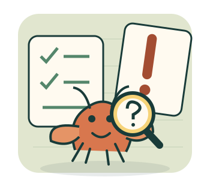

待核對的原話
先收好你的「一定」。
無知大挑戰？
眼前一幕，能說到哪一步？
不替原話加戲，也不把不知道當萬用答案。

01 拆原話分清觀察、推測與沒有根據的斷言。原話成立，也要敢選。
02 挑查證三張資料卡只能選一張。先確認，才揭開內容。
03 更新結論答案取決於你實際翻開的資料。證據變了，判斷也要更新。
要練幾個案例？
四個主題：畫面之外、因果別跳步、來源與原話、證據來了改判。快局每類一案，完整局每類三案；同輪不重複。可先看解析或答錯重試，但首次結果不會改寫。
全部為原創虛構情境與預先編寫的模擬紀錄，不影射真人，不連接 AI。無倒數、帳號、儲存或上傳；重新整理即清空。不是智力、人格或道德測驗。
- 1 拆原話
- 2 挑查證
- 3 更新結論
1–3 選答案，Enter 確認；P／Esc 暫停。切換分頁會暫停，回來後手動繼續。沒有倒數，不必搶答。
這輪不是判決書，是練習紀錄。
把「一定」交給證據。
首次結果與重試結果分開記錄。展開案例看原話、選擇與解析；重試不會抹掉第一次的待複習。